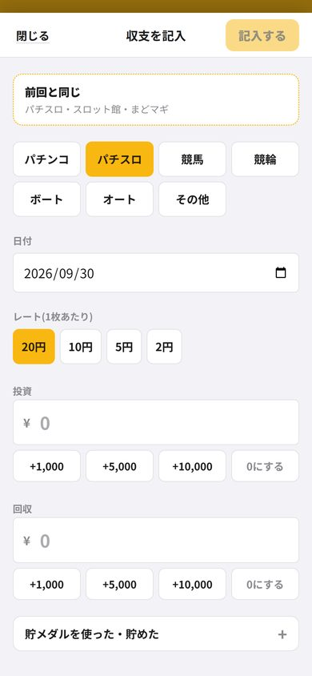
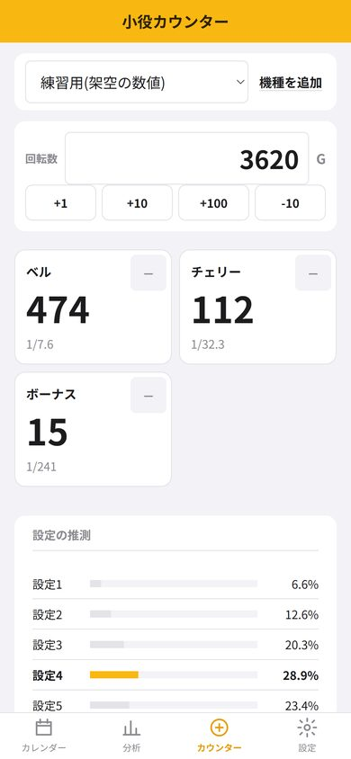

カチマケでできること
パチンコ・パチスロ・競馬・競輪・ボート・オート全部ひとつのカレンダーで。種類ごとの回収率も比べられます。
貯玉・貯メダルとレート4円・1円・20円・5円などのレートと玉数を入れると、円にして収支に入れます。店ごとの残りも分かります。
イベント日・特定日の収支記入に印を付けておけば「イベント日だけの回収率」が出ます。
店・機種・曜日・券種ごとの収支どこで勝ち、どこで負けているかが表になります。
小役カウンターと設定の推測ホールで押しやすい大きなボタン。数えた小役から設定ごとの確率を計算します。
勝った月は画像でシェア今月の収支や大勝ちを、X や LINE に送れる画像にします。
回収率・時給の計算機
その日の数字を入れると、収支・回収率・時給がすぐに出ます(この計算機は入力をどこにも送りません)。
収支+¥6,000
回収率120%
時給+¥1,200
計算のしかた
| 回収率 | 回収 ÷ 投資 × 100。100% を超えれば勝ち越し |
|---|---|
| 時給 | 収支 ÷ 遊技した時間。時間を記録した回だけで割る |
| 勝率 | 勝った回数 ÷(勝った回数 + 負けた回数)。±0 の日は数えない |
貯玉・貯メダルを使った日の収支の数え方
貯玉で再プレイした分も、お金を入れたのと同じ「投資」です。数えないと、実際より勝っているように見えてしまいます。
| レート | 1,000玉(枚)を円にすると |
|---|---|
| 4円パチンコ | ¥4,000 |
| 1円パチンコ | ¥1,000 |
| 20円スロット | ¥20,000 |
| 5円スロット | ¥5,000 |
例: 4円パチンコで現金1万円と再プレイ1,000玉を使い、2,500玉を貯玉にして終わったら、投資 ¥14,000・回収 ¥10,000・収支 -¥4,000。カチマケではレートと玉数を入れるだけで、この計算をします。
画面


Android 版のテスターを募集しています
Google Play で公開するために、14日間テストに参加してくれる方を探しています。入れておくだけで大丈夫です。
- テスター用のグループに参加する(Google アカウントで1回押すだけ。メールは届きません)
- テスト参加のページで「テスターになる」を押す
- Google Play のカチマケから入れる
うまく参加できないとき
- X のアプリの中で開くと、Google のログインが引き継がれないことがあります。右上のメニューから「Chrome で開く」を選んでください。
- グループとテスト参加は、スマホの Google Play と同じ Google アカウントで押してください。
- グループに入った直後は、Google Play に出てくるまで数分〜数時間かかることがあります。少し待ってから開き直してください。
iPhone 版は準備中です。
よくある質問
無料で使えますか?
記入・カレンダー・今月と先月の分析・負けの上限・シェア画像・バックアップは無料です。長い期間の分析や店ごとの収支などは有料の機能で、広告を1本見ると24時間使えます。
記入した収支はどこに保存されますか?
端末の中だけです。サーバーには送りません。バックアップのファイルを書き出して、機種変更のときに戻せます。
競馬の券種ごとの回収率も出ますか?
出ます。単勝・馬連・3連複・3連単などを記入しておくと、券種ごとの回収率と収支が表になります。